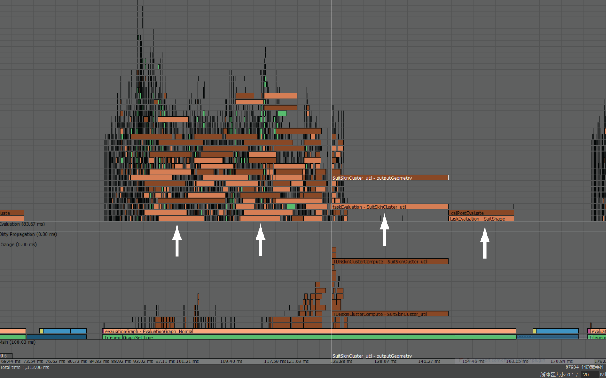

通过分析器，可以判断对场景解算时时间花在何处。使用分析器（“窗口 > 常规编辑器 > 分析器”(Window > General Editors > Profiler)）对场景解算以找出性能瓶颈。
通过查找
分析器中完成所用时间很长的事件，识别分析器中的性能减慢。这些事件由长水平条表示，如图所示。

分析器脏事件
脏事件应仅存在于 DG 解算模式中，而不应存在于串行、并行或 GPU 覆盖模式中，因为这些模式没有来自脏事件的开销。如果此类别为空，则没有脏事件。
如要在分析器中查找脏事件，请查找名为“Maya 脏”(Maya Dirty)的类别，其中事件以紫色显示。
注： “弄脏”是 Maya 确定需要在场景中更新什么才能在视口中绘制正确图像的过程。在计算数量之前，Maya 读取图表中的所有网格节点，直到它找到设置几何体动画的参数曲线。在每个步骤中，Maya 将每个节点标志为需要重新解算或“脏”。在适当地更新所有节点后，Maya 调用每个脏节点上的计算方法。
分析器解算事件
在分析器中以不同色度的棕色显示解算事件。如果瓶颈在解算中，则尝试识别造成性能问题的绑定元素。
若要找到解算事件，请执行以下操作：
- 单击分析器中表示慢任务的栏。在时间轴光标附近将显示一个标签，其中包含正在解算的节点的名称。
- 接下来，打开节点编辑器，并找到该节点以调查它在场景中的使用方式。确定节点设置是否在导致不必要的计算，例如：
- skinCluster 中是否有太多的权重？是否可以减少该数量？
- 使用的是融合权重而不是线性或 DQ？融合权重会占用大量资源，并需要更多的工作。
- 在绑定解算时间是否使用建模节点？（例如，deleteComponents 会占用大量资源，因为它对模拟的每一帧都重新解算。）
- 是否使用适合您任务的变形器？例如，如果只有一个逐顶点权重（从不改变），则不需要 skinCluster 变形器。如果是这样，请改用簇。
- 是否在不可见的绑定元素上使用昂贵的变形器？（与 GPU 上的变形相对应的解算事件以黄色显示。）
分析器渲染事件
在每一帧上，在解算事件之后执行渲染。渲染事件源自在视口中绘制场景几何体。渲染事件以蓝色显示。有关每个事件颜色表示什么的列表，请参见分析器颜色。